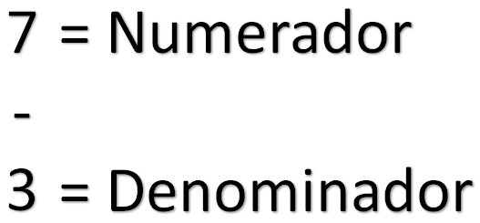
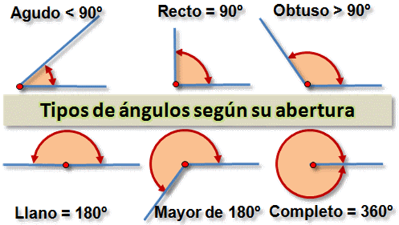
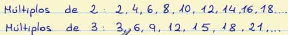
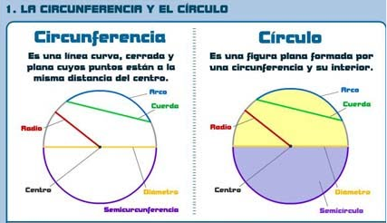
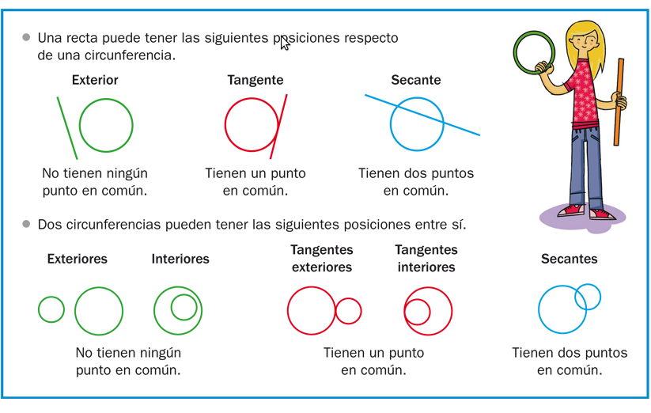
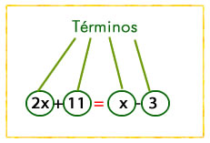
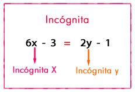
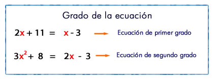
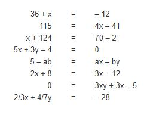

Operaciones con fracciones
Las operaciones con fraciones son una manera diferente de hacer operaciones matematicas, es decir, la suma en diferente entre números naturales y las fracciones. Algo importante a tener en cuenta antes de comenzar es cual es el nombre de cada parte de la fracción. La parte superior de una fracción es el numerador y la parte inferior es el denominador, un ejemplo seria:

Teniendo en cuenta esto, es el momento de saber como se hacen operaciones con las fracciones, las cuales se deben hacer de un modo u otro dependiendo si el denominador es el mismo o no, primero la suma.
Suma
La suma de fracciones con un denominador igual es de la siguiente manera:

Como se indica en la imagen, el denominador sera el mismo y se sumaran los dos numeradores de la fracciones y asi obtener el resultado, pero cuando los denomindores son diferentes la operación es:

Como se ve en la imagen, se multiplican los denominadores y el siguiente paso es multiplicar el numerador de la primera fraccion con el denominador de la segunda, asi mismo, el numerador de la segunda fracción multiplica con el denominador de la primera y con el resultado de estas dos multiplicaciones se suma para dar el resultado final.
Resta
Basicamente se hace el mismo proceso que con la suma (ya sea con el mismo denominador o no) pero reemplazando la operación principal por la resta, un ejemplo resta en sus dos formas es:

-------------------------------------------------------------------------

Multiplicación
La multiplicación de fraciones se basicamente multiplicar numerador con numerador y el denominador con el denominador

si el denominador es le mismo se coloca el mismo denominador.
Division
el proceso de la división es, se realiza una multiplicación en cruz de las fracciones y luego con el resultado obtenido se busca reducir el numerador y el denominador del resultado a su minima expresión.

En este caso, como no se puede reducir la expresion de ninguna manera ya que al dividirlo por 2, 3 o 5 una de las dos partes se vuelve decimal.
Números decimales
Los números decimales son un tipo de número natural el cual pueden indicar cosas como el peso, temperatura, precio, etc. Los decimales estan indicados por un número, seguido por una coma y por ultimo una sucesión de números que pueden ser finitos o infinitos (es decir, que el decimal puede tener un final o no).
Algo importante a tener en cuenta es que los decimales pueden aproximarse a números "normales" , es decir, el decimal 5.99 puede ser un seis debido a que la diferencia es minima, pero para esto se deben seguir una reglas.
Primero, no se puede aproximar un decimal infinito. Segundo, para que un decimal pueda apriximarse, sus decimas (los números despues de la coma) deben ser mayores a cinco para que se pueda cumplir.
Multiplicación y division de decimales
El proceso es facil; el decimal se multiplica teniendo en cuenta la cantidadd de números depues de la coma, un ejemplo seria:

Para la division es un proceso parecido a la multiplicación pero invertido, el ejemplo seria:

Ángulo y el Perímetro
El ángulo y el perímetro son dos conceptos basicos de la geometria que se deben conocer para dominar esta asignatura, sai que empecemos con:
El Ángulo
Es el espacio que existe en la interseccion entre dos lineas que parten de un mismo punto. los angulos pueden variar de tipos segun la distancia que exista entre las dos lineas, estos tipos son:
Tipos de ángulos
Ángulo agudo: Si la apertura se mayor a 0 grados pero menor a 90 grados.
Ángulo recto: La apertura de las dos lineas es de 90 grados.
Ángulo obtuso: La apertura es debe ser mayor a 90 pero menor a 180 grados.
Ángulo llano: La apertura de las dos lineas es de 180 grados, lo cual forma una linea recta.
Ángulo oblicuo: La apertura supera los 180 grados pero no los 360.

El Perímetro
El perímetro se refiere a el area que ocupa el contorno una figura geometrica. hallar el perímetro de una figura sirve para saber lo grande de una figura en un espacio.
¿Como hallar el perimetro de una figura?
Para poder encontrar el perimetro de una figura se debe sumar el tamaño de sus lados para asi saber cuanto mide su contorno. Un ejemplo sencillo seria:

en la imagen anterior se muesta un cuadrado, cual tiene una medida de 6 cm en cada lado, asi pues, si sumamos la medida de todas sus areas sabremos el perimetro.

Otra forma de hacerlo seria multiplicando 6 cm por 4, como el valor de los lados son iguales nos dara el mismo resultado.

POTENCIACION
La potenciación es la operación que consiste en multiplicar un número por sí mismo varias veces
Las partes de la potenciación son:
La base es el numero que se debe multiplicar.
El exponente indica cuantas veces se debe multiplicar la base por si misma.
La potencia es el resultado de la potenciación.
Siendo de esta manera las potencias se leen de la siguiente manera, se lee al base y se añade "al", junto al numero del exponente:
Si fuera un 3 el exponente seria, "dos al cubo", o si fuera un cuatro "dos a la cuarta potencia" y asi susecivamente.
Otra manera de leerlo es decir el numero de la base elevado al numero del exponente, por ejemplo seria dos elevado a la dos.
FACIL ¿NO?, es sencillo, recuerda la base es el número grande lo debes multiplicar por el mismo las veces que diga el exponente, es decir, el número pequeño que esta encima de la base.
EJERCICIOS DE DIVISION
Este tema es mas de repaso, por lo que como ya sabes dividir, te invitamos a que realices los siguientes ejercicios de repaso en tu cuaderno, son divisiones muy sencillas, para que recuerdes que practicando es como vas mejorando a hacer divisiones mucho mas rapidas e incluso mentalmente.
Por eso te invito a que te animes a hacer los siguientes ejercicios propuestos:
Recuerda, practica con constancia y paciencia, crea tus propias divisiones con números aleatorios, y ahi vas mejorando.
Minimo comun multiplo
El mínimo común múltiplo (mcm) es el número positivo más pequeño que es múltiplo de dos o más números.
Para entender mejor esta definición vamos a ver todos los términos.
Múltiplo
Los múltiplos de un número son los que obtienes cuando lo multiplicas por otros números.
Vamos a ver un ejemplo de los múltiplos de 2 y de 3. Para calcular sus múltiplos hay que ir multiplicando el 2 y el 3 por 1, por 2, por 3, etc.
2 x 1 = 2
2 x 2 = 4
2 x 3 = 6
2 x 4 = 8
y así sucesivamente hasta infinitos números.
3 x 1 = 3
3 x 2 = 6
3 x 3 = 9
3 x 4 = 12
y así sucesivamente hasta infinitos números.

Múltiplo Común
Un múltiplo común es un número que es múltiplo a la vez de dos o más números, es decir, es un múltiplo común a esos números.
Siguiendo con el ejemplo anterior, vamos a ver los múltiplos comunes de 2 y de 3.
Habrá que ver qué múltiplos tienen en común el dos y el tres, que en la imagen figuran en verde, es decir, el 6, el 12 y el 18. Hay que tener en cuenta que los múltiplos son infinitos y que nosotros solo hemos mostrados los primeros de cada número.
Mínimo común múltiplo
El mínimo común múltiplo es el número más pequeño de los múltiplos comunes.
Siguiendo con el ejemplo anterior, si los múltiplos comunes de 2 y de 3 eran 6, 12 y 18, el mínimo común múltiplo o mcm es 6, ya que es el menor de los múltiplos comunes.
Cómo calcular el mínimo común múltiplo
Se pueden utilizar dos métodos.
El primer método para calcular el mcm es el que hemos utilizado antes, es decir, escribimos los primeros múltiplos de cada número, señalamos los múltiplos que sean comunes y elegimos el múltiplo común más pequeño.
Ahora vamos a explicar el segundo método para calcular el mcm. Lo primero que hay que hacer es descomponer en factores primos cada número. Después tendremos que elegir los factores comunes y no comunes elevados al mayor exponente y por último, tendremos que multiplicar los factores elegidos.
Vamos a ver un ejemplo de esto, calculando el mcm de 12 y de 8.
Vamos a descomponer 12 y 8 en factores primos:
12 = 22 x 3
8 = 23
Ahora elegimos los factores comunes y no comunes elevados al mayor exponente, por lo tanto elegimos 23 y el 3.
Y por último los multiplicamos, por lo tanto 23 x 3 = 8 x 3 = 24
Así que el mcm ( 12 , 8 ) = 24
MULTIPLICACION CON NUMERO DECIMALES
Aunque el hecho de que estemos hablando de multiplicación de decimales y paresca complicado, NO, no lo es, es sumamente sencillo, es como multiplicar de manera normal, solo que entra en juego la coma, que te explicare luego, primero te invito a ver el siguiente video, donde te explicaran como se realiza:
Entonces, para explicarte de manera teorica, supongamos que tenemos la siguiente multiplicación de decimales:
Lo primero que debes hacer es hacer la multiplicación normal, quedaria tal que asi:
Resultado que daria:
Ahora vamos a mirar en la parte inicial de la multiplicacion, cuantos espacios hay de derecha a izquierda hasta llegar al punto decimal, asi tanto arriba como abajo segun se requiera, en nuestro caso si.
Como observamos, hay dos espacios arriba y dos abajo, por lo que los sumamos, y serian 4. Esta cantidad de espacios es la que debemos movernos de derecha a izquierda en el resultado y ahi es donde ubicaremos el punto decimal.
Ahi colocamos el punto decimal, y listo, ya tenemos nuestros ejercicio resuelto.
Listo, si ves que es super sencillo, por eso te invito a practicar y veras que son bastante sencillos de resolver.
Circulo y circunferencia
La circunferencia es una línea curva, cerrada y plana cuyos puntos están a la misma distancia del centro.
El círculo es una figura plana formada por una circunferencia y su interior.

Circunferencia
Centro: Punto central. Está a la misma distancia del resto de puntos de la circunferencia.
- Radio: Segmento que une el centro con un punto cualquiera de la circunferencia.
- Diámetro: Segmento que une dos puntos de la circunferencia pasando por el centro. Mide el doble que el radio.
- Cuerda: Une dos puntos de la circunferencia sin pasar por el centro.
- Arco: Porción de circunferencia limitada por una cuerda.
- Semicircunferencia: Es la mitad de una circunferencia.
Posiciones de una recta respecto de una circunferencia
Recta tangente: Recta que tiene un punto en común con la circunferencia.
- Recta secante: Recta que tiene dos puntos en común con la circunferencia.
- Recta exterior: Recta que no tiene ningún punto en común con la circunferencia.

Circulo
Los elementos son los mismos que la circunferencia, excepto la semicircunferencia, y tres más:
- Semicírculo: Mitad de un círculo. El diámetro divide al círculo en dos semicírculos.
- Sector circular: Porción de círculo limitada por dos radios y su arco.
- Segmento circular: Porción de círculo limitada por una cuerda y su arco.
Area y perimetro
El perímetro de un círculo es llamado circunferencia y se define por:
C = 2 π r = πⅆ
donde r es el radio, d el diámetro y π ≈ 3.141592654 .
El área de un círculo con radio r y diámetro d es:
A = π r 2 = π ( d2 ) 2
Numero PI
El número pi es una de las constantes matemáticas más importantes e indica la relación entre el perímetro (L) y el diámetro de una circunferencia (D).
L = pi x D
Pi es un número irracional, es decir, es un número que no puede ser expresado como fracción de dos números enteros, y por tanto tiene un número infinito de decimales.
Ecuacion
Una ecuación es una igualdad entre expresiones algebraicas que se cumple solamente para algunos valores de las letras.
Resolver una ecuación es encontrar el valor de la incógnita. Para esto debes aplicar algunas de las propiedades de las operaciones que has aprendido en cursos anteriores.
Elementos
Miembros: son las expresiones que aparecen a cada lado del signo igual ( =)
Términos: son los monomios de cada miembro.

Incógnitas: Son las letras que aparecen en la ecuación.

Grado de la ecuación: es el mayor exponente con que figura la incógnita (una vez realizadas todas las operaciones).

Soluciones: son los valores que deben tener las incógnitas para que la igualdad entre los miembros sea cierta.
Ejemplos de ecuaciones:

En estos ejemplos puede observarse lo siguiente:
Hay una expresión escrita a la izquierda del signo igual y hay una expresión escrita a la derecha del signo igual. La que está antes del signo igual recibe el nombre de primer miembro , la expresión que está a la derecha del signo igual se llama segundo miembro.
En una ecuación puede haber más de una incógnita; es decir, más de un valor desconocido.
Una incógnita puede tener como exponente al número 1 (x 1 = x ), al número 2 (x 2 ), al número 3 (x 3 ), al número 4 (x 4 ), etc. El exponente indica el grado de la ecuación . Debe leerse "equis elevado a uno, equis elevado a dos, etc."
¿Cuándo está resuelta una ecuación?
Una ecuación está resuelta cuando se ha encontrado el valor o los valores de la o las incógnitas que hacen verdadera la igualdad. Este valor recibe el nombre de raíz o solución.